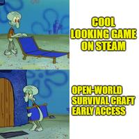

0
0
0

Linus Torvalds once said LLMs might bring a 10X increase to programmer productivity. But speaking at Open Source Summit India 2026, he now says that number was "not scientific,"
reports ZDNet. "That was pulled out of my ass number, obviously."
Today, he continued, "we're at the point where hopefully it creates more productivity than it takes away," but "we certainly saw more junk being generated by LLMs than we saw useful code up until the like early this year.... it can actually be a huge drain on resources when it takes humans a lot of effort to figure out that, hey, this machine-generated report was not true." Even now, he said, "most of the good ones require more than just the LLM," because "we've had to push back quite a bit... if you find a bug with an LLM, it's not enough to just ask the LLM to make a bug report and then throw it over the fence to us. We want to see a suggested patch; we want to see the human who ran the LLM act as a kind of back-and-forth."
Torvalds described many AI-generated patches as "mindless band-aid kind of patches... they may fix the immediate problem, but the kind of bug remains, and it just is waiting in the hallway to hit you in another place." For his own toy projects, he uses LLMs as prototypers: "I use them as a way to prototype things... quite often the code is not usable in that form, but it's a great way to try something out," while insisting that for kernel-level fixes, "LLMs, in my experience, have not been at that level yet."
Torvalds acknowledged that some AI-found issues have been "absolutely, stunningly, I mean, interesting in a painful kind of way," especially security problems that "show up in the technology press two days later." Despite the embarrassment, he said, "I'm very much not a shoot-the-messenger kind of person. I think we're much better off with LLMs finding bugs, even when they are embarrassing, and they are things that we should probably have found two decades ago."
Torvalds also said he's using AI "for my own toy projects... Every time I travel to some new place, and this is the first time I've been to India, I send the kids pictures of where I am, and for some strange reason, Godzilla seems to follow me around and gets added to those pictures."
ZDNet notes that Torvalds concluded, "There are many useful and less useful uses for AI," and "I think Godzilla is a great place to stop."
Thanks to Slashdot reader joshuark for sharing the article.
Read more of this story at Slashdot.
The CEO of SK Hynix, one of the three largest DRAM producers, predicted to Reuters that the memory industry will see its "worst-ever" supply shortages in 2027, reports the hardware/gaming news site Wccftech:
SK Hynix has also forecasted that, given the current market demand, they will fall way short of fulfilling the market demand, and that will continue beyond 2030. The comments from SK Hynix are in line with what Samsung and Micron executives have already said. Samsung has warned of 2027 being the worst year in terms of shortages and that things will continue this way till 2028 and beyond. Meanwhile, Micron has said that the current shortages are only the "first innings" and that both DRAM/NAND supply will be tight, as they are only able to meet 40-50% of the total market demand in the coming years.
Heightened demand from AI customers and multi-year agreements further put pressure on the market. The big three DRAM makers have already prioritized premium DRAM segments such as HBM and LPDDR5X, while commodity memory such as DDR5, DDR4, and entry-level LPDDR RAM has taken a back seat. While these have boosted the profits of SK Hynix, Micron, and Samsung, they have devastated the consumer segment, which is facing the worst kind of price hikes that are affecting all sorts of components and platforms, including PCs, Smartphones, Consoles, etc...
SK Hynix, like Samsung and Micron, is also preparing to embark on a multi-year and multi-billion dollar expansion plan with new fabs and facilities being laid out across South Korea. SK Hynix is also considering the construction of Fabs in the US, Japan, and Southeast Asia, though the final plans are yet to be cemented. Micron recently started construction of its new facility that will be used for DRAM production. As SK Hynix proudly marks its Nasdaq debut, its CEO's sobering forecast serves as a clear reminder: the memory industry is entering its most challenging chapter yet. With 2027 poised to bring the worst supply shortages in history and tight conditions likely persisting beyond 2030, the AI boom is reshaping the entire semiconductor landscape.
Read more of this story at Slashdot.
The Wall Street Journal says "an intense 27-year-old activist who had been leading sit-ins at OpenAI to protest the dangers of AI" was just part of a larger movement.
"The Bay Area's AI boom is drawing young disillusioned men and women to join the fight against it. They are upending their lives and leaving behind careers for think tanks, nonprofits and street protest groups."
Their cause is now riding a surge of anti-AI backlash. Many Americans are souring on the technology amid mass layoffs, data center sprawl, reports of chatbot-fueled attacks by unstable users and hacking tools that have panicked cybersecurity professionals. Seventy percent of U.S. adults believe AI will cost jobs, and 55% believe it will do more harm than good in their daily lives, according to a recent Quinnipiac University poll. But for activists on the front lines, the driving fear is often more dramatic: human extinction. They cling to dire predictions, like Geoffrey Hinton's. The Nobel laureate, dubbed the "godfather of AI" for his work on artificial neural networks, warns of a 10% to 20% chance AI will wipe out humans.
At its most extreme and troubling end, some believe they must stop an AI apocalypse by any means necessary. In April, an unknown assailant fired 13 shots at the home of an Indianapolis councilman, leaving a note: "no data centers." That same month, authorities arrested a 20-year-old Texas college student for an attack on OpenAI CEO Sam Altman's home in San Francisco, and charged him with attempted murder and arson. The student was carrying an anti-AI document with a section on "our impending extinction," according to a federal criminal complaint. He has pleaded not guilty and his lawyers have said his actions appear to have been driven by an "acute mental-health crisis, not a desire to harm."
Read more of this story at Slashdot.
The Associated Press reports:
An islandwide blackout struck Cuba on Friday for the second time this week as the nation of nearly 10 million people grapples with a crumbling power grid and fuel shortages stemming from a U.S. energy blockade...
Authorities reported that they have already begun restoring power to some areas. On Monday, another massive blackout affected nearly 10 million people nationwide. Authorities reported during the week that service was gradually being restored from that outage.
"While total blackouts have become increasingly common in the Caribbean country, it's unusual for back-to-back ones to hit just days apart..."
Read more of this story at Slashdot.
Which jobs are most threatened by AI? "Programmers, software engineers and other tech industry employees," goes one common answer.
"But many economists are more concerned about a different, larger group of white-collar workers," reports the New York Times: customer service reps, bookkeepers, payroll clerks and HR specialists, "who fly under the radar but collectively account for tens of millions of jobs..."
They are spread across the country and throughout the economy, working in every industry, in big cities and small towns, at major corporations and mom-and-pop businesses... These jobs typically offer a middle-class salary or a pathway to achieving one — much as manufacturing jobs did for men before decades of globalisation and automation wiped many of them away... For now, such an outcome is a fear, not a forecast. Despite high-profile layoffs in tech and finance, there is little firm evidence that AI has hurt the labour market as a whole.
Economists have become increasingly convinced that disruptions are likely, but they say it is too early to know where or how widespread they will be. They remain broadly sceptical of claims that the technology will lead to mass unemployment in the near future. Some AI industry leaders have walked back such predictions in recent weeks. But given the extraordinary pace at which companies are adopting AI — and at which the technology is improving — economists say policymakers need to consider the potential effects on the labour market. And they say they are concerned that the public debate has focused too much on software engineers and a relative handful of other high-status careers — lawyers, consultants, economists — rather than the workers who could be most vulnerable...
Economists at Northwestern University recently recalculated measures of AI exposure based on the makeup of the total workforce, not just the people using the technology. Administrative and front-line roles, such as customer service representatives, rose to the top of the list. "The most affected jobs are secretaries, are routine clerks," said Michelle Yin, one of the working paper's authors. "They're not computer scientists or data scientists at all."
The article also includes this counterpoint from an economist at the University of Illinois who has studied earlier waves of white-collar automation: that like other disruptive technologies, AI likely will also create new jobs. So the possibility exists AI will make workers more productive and allow them to earn more. "I would be cautious about just focusing on what are we losing as opposed to what are we going to gain on the other side."
Read more of this story at Slashdot.
"Elon Musk and Sam Altman criticized each other in new posts on X," reports CNBC, "highlighting the billionaires' long-standing tussle over OpenAI's evolution."
This week, SpaceX released the Grok 4.5 generative AI model, while OpenAI debuted its own GPT-5.6 Sol. For days, Musk and Altman have hyped up their respective releases, but on Saturday the rivalry got personal. In response to a post about Apple filing suit against OpenAI on Friday over alleged theft of trade secrets, Musk wrote, "Scam Altman strikes again ...." Minutes after his post, Musk doubled down, writing, "He takes scamming to a whole new level." Next, Musk published a photo of Altman that included the words, "I'm doing this because I love it."
"By 'this' he means scamming," Musk wrote, including two rolling-on-the-floor-laughing emojis. Musk then replied to that post, writing, "He might literally love scamming more than any human alive!"
The flurry of social activity got Altman's attention. "[H]omeboy you're the one sellling public market investors on short-term space datacenters," Altman wrote in an X post of his own that garnered over 11 million views.
"We start flying them next year. Maybe you can come see them if your parole officer approves," Musk fired back.
Separately, Altman put Musk's fresh wave of attention in the context of OpenAI's fresh model release. "[T]here are a lot of benchmarks that suggest 5.6 sol is the best model in the world right now, but the most reliable way to tell is that elon is obsessed with me again," Altman wrote on X.
Reacting to another post, Altman wrote that he was "not afraid of apple, but i have tremendous respect for them. s-tier company," CNBC reports — leading to a sarcastic response from X's head of product. "Incredible trade secrets as well, some of the best."
And CNBC notes that Musk "replied with a face-with-tears-of-joy emoji."
Read more of this story at Slashdot.
"While KDE and GNOME dominate the landscape, a relative newcomer is starting to make waves with features other desktops still don't fully support," argues XDA Developers:
Linux 7.0 was the first release of the kernel to officially support Rust, but COSMIC has been all-in on Rust since the very beginning, and COSMIC 1.1 finally stripped all the leftovers of C language from the desktop. It no longer has any traces of Nautilus (the GNOME file manager), and then there's now a COSMIC-native system monitor to replace the GNOME System Monitor, so you have even fewer chances of being afflicted by C-related problems. [The article calls COSMIC's system monitor "much better at showing detailed information about everything from processes to network and disk usage compared to the GNOME and KDE alternatives."]
Stacking Windows
As someone who used to love following Windows news, one of the most disheartening announcements was when Microsoft gave up on Sets, a feature that essentially turned every app window into a tab you could combine with other apps in the same window. I never thought I'd see that feature again, until COSMIC came along. Simply called "stacking", COSMIC has a feature that is exactly what Sets was supposed to be, though this time, you have more control. By default, apps still open in their proper, typical windows, with a title bar as you'd expect. But if you do want to combine multiple apps into one, you can right-click the title bar (or press Super + S) to enable stacking for that window. Then, simply drag another window over that one to start stacking them as tabs. This essentially gives you a whole new way to create "workspaces", as you can have a single window with all the tools you need, so you don't need to jump between different windows all the time, and you can keep a given window focused on a specific workload, but have multiple apps within it. It's a great reminder of what Microsoft took from us, too.
Tiling, But On Demand
Tiling windows is one of those features some power users simply love, and yes, there are ways to make it happen on KDE and GNOME with third-party apps or extensions, but those aren't ideal. It's an extra step to set them up, and very often they don't play nice with all the features those desktops offer, especially as new updates come out and those tools may have a hard time keeping up with the development of the desktops themselves. COSMIC is fantastic because not only does it have built-in window tiling, it's entirely controllable by the user. You can set any workspace to use tiling or floating windows depending on your preference, all completely independent of each other, and you can also choose the new default behavior for new workspaces so things are always tuned to your preferences. You can turn tiling on or off for a given workspace easily, and of course, even while tiling is on, you can allow certain apps to ignore it and still float above others. Not all these capabilities are exclusive to COSMIC, but to have this kind of feature built in with this level of control is still leagues better than anything KDE or GNOME offer in this regard.
The article argues COSMIC also makes customization extremely simple without stifling your options (like tweaking color options for your desktop). "This desktop environment just keeps getting better, and it's quickly establishing itself as a major competitor to long-standing alternatives."
Read more of this story at Slashdot.
"I have been trying to find something meaningful to say about the Id Software layoffs," John Carmack posted Thursday to his 2.8 million followers on X.com:
My "Microsoft will probably be a good steward of the brand" statement isn't aging well, and this is certainly going to dampen the mood of the founder reunion at QuakeCon next month.
I'm saddened, but I can't muster anger or outrage over it. I don't have access to the books, but I suspect that Id Software was a marginal business from Microsoft's perspective. I believe the reports that Minecraft revenues have been carrying several other studios.
To continue being produced long term, games need to succeed, not just be beloved. Games are competing with every other option for spending your leisure time and money, and the competition is brutal. You can't rule out the possibility that executives are idiots, but that shouldn't be your default belief. I don't think there is any obvious path that would have doubled the revenue from Id games.
Could they have gotten more with a different pricing strategy? Could they have created more things for fans to buy? Could they have cost effectively marketed in a way that reached more players that would have loved and bought the games? Could they have changed the game designs and broadened the appeal to more players without alienating existing ones? Could they have produced the games at a lower cost, faster or cheaper? I really don't know.
The game isn't over yet, and I hope the studio rallies through.
Id Software co-founder John Romero also shared his thoughts on X.com:
I'm so sorry for everyone at id Software affected by these layoffs. I know what it feels like to leave id while id goes on. It's a strange and painful thing to step away from a place that holds so much of your work, friendships and history.
The people at id have done a great job moving that legacy forward. DOOM, Quake, and Wolfenstein are not easy names to carry on, especially in today's industry. The last few games showed real care, skill and respect for what those worlds mean to people.
Romero also expressed his hope for "digital preservation" of Id's ongoing history (including code and assets). "I'm thinking of everyone at id today, and everyone else affected by yesterday's layoffs. Romero Games was there a year ago. I know how devastating it is, and my heart's with all of you.
"Four Xbox studios are already out the door," noted IGN, but shared some thoughts about the future:
Some have expressed concern that id Software would be unable to lead development on any new games in its current state, and that it might be relegated to support studio status. But in a new statement [posted to id Software's page on X.com] id Software said it was now at the staffing level it was back when it made the much-loved 2016 Doom reboot — and insisted it was still capable of making "great games."
"While our studio was impacted, those changes were spread across teams. We still have the crew we need to build the games and tech we're known for... We're going to keep building the great games and tech that have defined us for the past 35 years, and we're looking forward to seeing you at QuakeCon this August."
Read more of this story at Slashdot.
Facial recognition technology in U.K. shops "will soon alert police in real time to the presence of serious offenders," reports The Guardian, "with civil liberties groups warning of a 'dangerous escalation' towards surveillance and criminalisation in the retail sector."
Facewatch, a facial recognition system used by more than 100 businesses including Sainsbury's, B&M and Spar to monitor thieves, said it was launching a UK-first feature to "alert police instantly when the most serious offenders trigger a live facial recognition match". Facewatch's chief executive, Nick Fisher, said the "unique technical development" would be launched in autumn and would warn police in an average of four seconds when the "worst offenders" were flagged on its network... Charlie Whelton, the policy and campaigns officer at [civil liberties nonprofit] Liberty, said it was concerned about this "untested, opaque development" and the way facial recognition technology had been allowed to "proliferate without anything to govern it".
"It's not against the law to walk into a shop even if you've committed crimes in the past," he said. "The idea of calling the police on somebody who hasn't committed a crime, but there's a concern they might, is really upending the way we do things. And of course, it's not infallible. These systems do make mistakes, and it's very hard to argue with that when it happens to you." A number of people have been forced to leave shops after being falsely identified by Facewatch technology as a shoplifter, with some describing it as "Orwellian" and saying they felt as though they were "guilty until proven innocent"...
The use of the Facewatch technology looks set to quickly expand, with Sainsbury's recently announcing plans to increase its use from 55 stores to more than 200 by the end of the year. Facewatch said it alerted retailers almost 300,000 times that a "known repeat offender" had entered a store during the first six months of 2026, and that its system allowed staff to intervene "before theft, abuse or violence could occur or escalate"... [E]xperts argue the use of facial recognition technology in shops to catch shoplifters is disproportionate. Nuala Polo, the UK public policy lead at the Ada Lovelace Institute, which studies the impact of AI on society, said: "There are other, much less intrusive means that you can use to catch shoplifters where you don't need to be scanning millions of faces every day, virtually without consent...."
The campaign group Big Brother Watch has criticised police for "inserting themselves into this cowboy operation" and said people would be matched against "a secret blacklist compiled by unaccountable businesses and private security guards".
Read more of this story at Slashdot.
Since February, New York state police have arrested 48 people for trespassing on a former IBM campus in Somers, New York, reports the Wall Street Journal. 30 of the arrests were teenagers.
The long-vacant site has become a magnet for so-called urban explorers, who prowl abandoned malls, hospitals, power plants, amusement parks, factories and any other disused structure they can breach... [I]t's been turbocharged by artsy videos on Instagram and TikTok that spur others to create their own posts, luring still more curiosity seekers... In Somers, social-media images of the old IBM campus — a sprawling, pyramid-studded 1980s complex designed by the late I.M. Pei's firm — show dystopian scenes: busted windows, tossed rooms and graffitied walls. But they also give eerie glimpses of conference rooms and cubicles unchanged since IBM left a decade ago, as if employees had fled the daily grind one day and never returned...
One man in his mid-20s faces felony charges; police allege he had a loaded 9mm gun and took a Sony camera and power strip among other souvenirs. Andrew Proto, a defense lawyer, said "a 15-second clip" isn't worth a criminal record... Proto said he has represented or advised several minors arrested on the campus. The Somers town court clerk said some defendants received a 6-month "adjournment in contemplation of dismissal," meaning charges will be dropped and their arrest sealed if they avoid trouble. Some explorers who have posted about the IBM site say they follow an observe-and-preserve ethos and reject vandalism. They say they're driven by curiosity, the thrill of roaming forbidden spaces and a zeal to document discoveries — and that they're careful and know their limits.
"It actually gives me hope when I hear that kids are out there getting into trouble," says Bradley Garrett, a cultural geographer and author of the book "Explore Everything: Place-Hacking the City," about his own urbex adventures. He sees urban exploration as "a gateway drug in a good way, sometimes, into intellectual curiosity about history and culture." But Garrett said popular spots can be "loved to death" online — and then shut down, looted or set ablaze.
"Trespassers were blamed for a March 30 fire, reports a local newspaper, "that damaged one of the buildings and required volunteer firefighters to spend three hours extinguishing the blaze."
Read more of this story at Slashdot.
For nearly two years the Free Software Foundation has been fighting web crawlers (including many aggressively scraping training data for AI models). A botnet controlling about five million IPs hit one system for six months in 2025. Their systems administrator wrote this week that they view these as distributed denial-of-service attacks.
How are they fighting back?
We noticed patterns in the scrapers that were abnormal, which gave us material for writing regular expressions. Searching for the regular expression then gave us a large lists of IP addresses. Looking up the origin of those IP addresses revealed that some of the crawlers were using botnets of residential IP addresses to scrape faster and avoid detection. We looked for what kinds of botnets might be generating the kind of traffic that we were seeing, and one that we suspected was called the "Vo1d" botnet, comprised of smart TVs running some sort of compromised app... We got confirmation that at least some of the botnet traffic hitting GNU Savannah was originating through the Vo1d/Popa botnet.
We placed our regular expressions in fail2ban, and found that we were hitting the maximum rules that could be added to UFW firewall rules on our systems which showed degradation around 65,000 rules... We learned about ipset and configured fail2ban to add IP addresses that it found to IP sets. Using ipset, we kept building larger IP sets and did not find instability with as large as five million rules...
We eventually found a promising project on Framasoft's forge Framagit called reaction written by ppom... After we ran into scaling issues with our initial implementation, we developed a much faster implementation where the reaction shutdown process would export the IP sets to disk and the reaction startup process would restore the IP sets. This allowed us to have nearly instantaneous restarts of the service to apply new rules. We published both of our configurations upstream to reaction's wiki so that everyone can benefit from it. reaction's getting started documentation now leads to the method that we proposed...
Many sysadmins know about fail2ban, but not enough people know about reaction. I am very grateful to ppom for the help they have provided and for the tremendous project they have released to the world with reaction. We have implemented other defenses as well, but reaction is doing the majority of the automated work keeping our sites online.
Read more of this story at Slashdot.
Nerds.xyz reports:
DuckDuckGo just gave its browser a feature that a lot of people have been waiting for. The privacy-focused browser can now block most video ads on YouTube, letting users watch videos without sitting through the pre-roll and mid-roll interruptions that have become part of everyday life on the platform. The feature is already enabled by default for iPhone, Windows, and Mac users running the latest version of the browser. Android users can turn it on manually... with DuckDuckGo planning to enable it by default in a future update...
To make it work, DuckDuckGo relies on the same community-maintained filter lists used by uBlock Origin, along with some of its own compatibility rules. The company says you might notice a bit of extra buffering before a video starts, but once playback begins, most ads should be gone.
Slashdot reader BrianFagioli argues that the feature raises questions about how creators are compensated when ad revenue is bypassed.
Read more of this story at Slashdot.
California drew more than $335 billion in venture capital funding this year, reports the Los Angeles Times, citing data released Thursday by PitchBook on private market funding:
Its next biggest competitor, New York, raised less than a tenth of California's total. Texas raised 1/40th of the amount... Although a campaign for a new tax on billionaires has convinced some ultra-rich residents to shift to other states and businesses often complain that high property and energy costs and an anti-business regulatory regime make it too tough to make money in the state, the inability of the top talent, companies and investors in AI to set up elsewhere shows California's enduring attraction.
The state's economy grew 5% last year to a record $4.25 trillion, making it larger than every country other than the U.S., China and Germany. It is home to nearly 400 billion-dollar startups — more than any other state, according to CB Insights... Among metropolitan regions, Los Angeles ranked behind only Silicon Valley and New York, which attracted $98 billion and $11.5 billion in venture investment, respectively... Investors poured in nearly $8 billion across 207 deals in the Los Angeles, Long Beach, and Santa Ana metro areas, up 28% from a year earlier, according to PitchBook...
Nearly 90% of invested dollars [in California] went to AI firms, up from last year, when around 65% of new funds were allocated to AI. "If you're a tech company and you're not an AI company, you have a very, very difficult opportunity ahead of you to raise capital," Stanford said.
Read more of this story at Slashdot.
Microsoft released its 2026 Environmental Sustainability Report showing that last year it matched its entire electricity consumption with renewable energy, reports The Register.
"The bad news is it also increased greenhouse gas (GHG) emissions by 25%" — mostly due to datacenter construction and a decision to stop purchasing some renewable energy certificates:
In 2020, Microsoft set itself the goal of becoming "carbon-negative" by 2030. Its own figures show emissions heading only upwards, from 13 million tons of CO2 equivalent in 2020, to 20 million tons in 2025. However, Microsoft estimates that without the carbon reduction initiatives it has already put in place, emissions would now stand at 34 million tons...
For the first time, Microsoft claims to have replenished more [water] than it withdrew during 2025, returning 14,278 million liters (3,771 million gallons). Elsewhere, the corporation says its Circular Centers program reused 92% of decommissioned servers and their components.
Read more of this story at Slashdot.
"Meta has axed a controversial feature that allowed users to modify photos from public Instagram accounts using AI," reports TechCrunch:
The feature, which wasn't designed to alert a user if their photos were used in this way, prompted immediate backlash... The company issued a blog post Friday announcing that it was removing the feature. Puck News founding partner Dylan Byers was the first to share the company's decision... Byers notes that the decision to do away with the feature came "amid scrutiny from users and talent agencies, including CAA."
Read more of this story at Slashdot.
Grace Kay / The Information : Sources: Cursor is building a general-purpose AI agent codenamed Sand, aimed at non-developers, that handles emails, texts, and documents to rival Claude Cowork — Cursor is developing a general-purpose AI agent meant to compete with popular tools like Anthropic's Claude Cowork …
Bloomberg : OpenAI, Meta, and SpaceXAI may be able to put pressure on Anthropic by emphasizing cost efficiency, as business customers increasingly scrutinize AI spending — Three prominent artificial intelligence developers released new models over the past week. They all promise to be more advanced …
The Economic Times : Anthropic says it is extending Claude Fable 5 access on all paid plans, as well as keeping Claude Code's weekly rate limits 50% higher, through July 19 — In a post on X, the company said, “We're extending Claude Fable 5 access on all paid plans, as well as keeping Claude Code's weekly rate limits 50% higher, through July 19.”
Mark Gurman / Bloomberg : Sources: Apple is already taping out M7 with major NPU upgrades, and plans M7 Ultra with 1.5TB RAM, and M8, for 2028; new Pencils are coming with a new iPad Pro — Also: New Apple Pencils are coming. — Apple's new Mac chip road map represents the company's latest move to rebuild …
Sam Learner / Financial Times : Users of AI coding tools are flooding open-source projects with low-quality contributions, overwhelming maintainers and potentially eroding community engagement — Our obsession with AI code-writing tools is overwhelming the web's unsung human caretakers. If you are reading the digital version …
Zusha Elinson / Wall Street Journal : A look at the growing anti-AI movement in the Bay Area, as the disappearance of Sam Kirchner, co-founder of a hard-line activist group, has the movement on edge — The resistance to artificial intelligence is growing over fears about human extinction—but one activist's disappearance has the movement on edge
Financial Times : AirDNA: during the FIFA World Cup group stage, platforms such as Airbnb saw 52K+ new listings in US host cities, while hotel bookings fell short of expectations — Hotel bookings fall short of expectations as price-conscious fans opt to stay in American homes
Lucia Moses / Business Insider : NYC-based Vendelux, a live B2B event information platform for CMOs and marketing and sales teams, raised a $50M Series B led by Tribeca Venture Partners — - Vendelux, a company that helps CMOs figure out their live events strategy, raised $50 million. — It plans to use the new round …
Laura Dubois / Financial Times : EU Justice Commissioner Michael McGrath says the EC is set to propose new digital rules by year-end aimed at protecting consumers from online spending traps — Justice commissioner Michael McGrath says Brussels seeks to strengthen social media safeguards — Brussels is preparing …
Ben Cohen / Wall Street Journal : A look at Bending Spoons' hiring process: the company, which owns Vimeo, AOL, and Evernote, received 800,000 job applications last year and made only 286 hires — Getting an offer from Bending Spoons, which owns AOL, has become harder than getting into Harvard
Benedict Evans : Current AI market dynamics point to frontier models becoming commodity infrastructure as the token crunch eases, with value shifting to products built on top — There are only two things you can say with certainty about token prices: we're in a supply crunch, and this is unstable.
Kaitlyn Tiffany / The Atlantic : Psychologist Peter Gray argues that school stress, not smartphone use, is the main driver of the teen mental health crisis, challenging Jonathan Haidt's thesis — When the 82-year-old psychologist Peter Gray describes the way he grew up, he punctuates the anecdotes by saying that modern parents …
M.G. Siegler / Spyglass : Apple's lawsuit could sidetrack OpenAI's hardware aspirations for years, or possibly forever, as the startup gets into yet another controversy and messy divorce — If their lawsuit is successful, that ChatGPT device may be no more... We all know the old saying “don't poke the bear.”
Mark Gurman / Bloomberg : Apple's OpenAI lawsuit follows months of simmering tensions and highlights OpenAI's hardware chief Tang Tan's strained relationship with former boss John Ternus — When iPhone engineer Chang Liu quit for a job at OpenAI's nascent hardware division, Apple Inc. says he left with more than just years of experience.
Ernesto Van der Sar / TorrentFreak : Filing: Google urged the European Commission not to target DNS resolvers, VPNs, or IPs to fight piracy, calling the measures ineffective and easily circumvented — Google has told the European Commission that pirate site blocking causes “significant harm” and should not target DNS resolvers, VPNs or shared IPs.